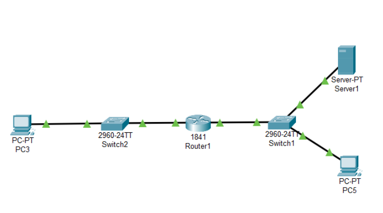

Sandbox Application
1. Network Diagram
Here is the network diagram: Configuration Steps: You need to create three VM Machine’s for this Project. • Download the Virtual Box (VM) and install in your PC. • Download the three OS for project. • Ubuntu Desktop (.iso format) or our Desktop OS like (Kali Linux, Windows, etc..,). • Ubuntu Server OS (.iso format). • Application Server in Bitnami WordPress (.ova format). • Add three OS in Virtual Box.
2. IP Address Table
| Device Role | IP Address | Subnet Mask |
|---|---|---|
| Desktop VM | 192.168.22.2 | 255.255.255.0 |
| Gateway Router VM (Subnet 01) | 192.168.22.1 | 255.255.255.0 |
| Gateway Router VM (Subnet 02) | 192.168.122.1 | 255.255.255.0 |
| Application Server VM | 192.168.122.2 | 255.255.255.0 |
3. GitHub Link
https://github.com/MohamedAbisheik2506/SandBox-Applications
4. Functional Test Results
Evidence of successful communication between VMs:
- Ping results between Ubuntu Server and Desktop:
- Ping results between Ubuntu Server and Bitnami Application Server:
- Ping results between Ubuntu Desktop and Ubuntu Server:
- Ping results between Application Server and Ubuntu Server:


5. Video Demonstration
Check out the demonstration video: